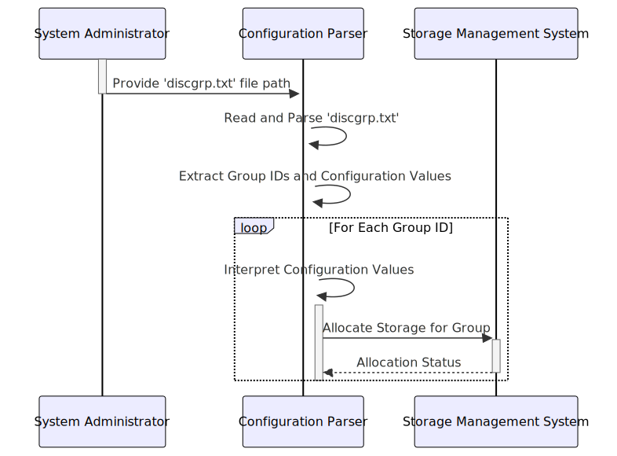

Gerado em: 1 de outubro de 2024
Título do Documento: Analisador de Configuração de Alocação de Grupo de Discos
Descrição Resumida:
Este documento descreve um sistema responsável por analisar e interpretar o arquivo de configuração discgrp.txt, que define parâmetros de alocação de armazenamento para diferentes grupos de dados. O sistema lê o arquivo, extrai os identificadores de grupo e seus valores de configuração associados e utiliza essas informações para alocar recursos de armazenamento de forma eficaz.
Histórias do Usuário: Como administrador do sistema, preciso de uma maneira confiável de definir e gerenciar a alocação de armazenamento para diferentes grupos de dados, garantindo que cada grupo tenha os recursos apropriados alocados com base em seus requisitos específicos.
Épico Relacionado: 10 - Gerenciamento de Arquivos de Dados
Requisitos Técnicos:
Análise de Arquivo: O sistema deve ser capaz de ler e analisar o arquivo discgrp.txt, extraindo os identificadores de grupo e seus valores de configuração correspondentes.
discgrp.txt.groupID e configurationValues, delimitados por espaço em branco.groupID e o valor é o configurationValues.Interpretação de Configuração: O sistema deve interpretar os valores de configuração extraídos para determinar os parâmetros de alocação de armazenamento apropriados.
configurationValues para um groupID específico.configurationValues com base em seu formato definido. (Uma análise mais aprofundada é necessária para determinar o formato exato e o significado desses valores).groupID fornecido.Alocação de Armazenamento: O sistema deve utilizar os parâmetros de configuração interpretados para alocar recursos de armazenamento de acordo.
groupID específico.Modelos Relacionados
groupID: String, Identificador exclusivo para o grupo de dados.configurationValues: String, Parâmetros de configuração codificados como uma string.diskAllocation: String, Identifica o(s) disco(s) físico(s) ou pool(s) de armazenamento atribuídos ao grupo.performanceSettings: String, Representa as configurações relacionadas ao desempenho (por exemplo, nível de RAID, cache).capacityLimits: Inteiro, Capacidade máxima de armazenamento permitida para o grupo.Configurações:
discgrp.txt: /path/to/discgrp.txtMelhorias de Código:
configurationValues para garantir a integridade dos dados e evitar problemas no sistema devido a configurações incorretas.discgrp.txt para melhorar a legibilidade e a eficiência da análise.Melhorias de Segurança:
discgrp.txt e ao sistema de análise apenas ao pessoal autorizado.Diagrama Conceitual:
–Made by “Smart Engineering” (by Compass.UOL)–